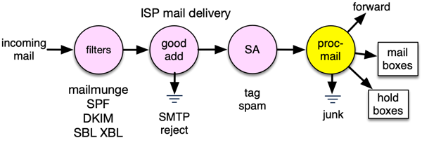
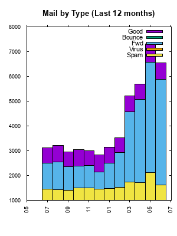
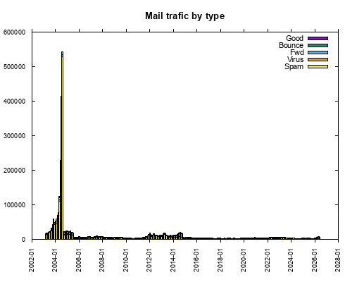
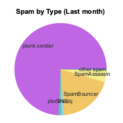

2026-10-01; Version 12
How I Filter Spam
I wrote one of the earliest e-mail programs in 1965.
As the story says, even back then we worried that someone might spam,
though we didn't call it that
(the term  wasn't applied to messages until 1993, based on the the 1970 Monty Python Spam skit).
wasn't applied to messages until 1993, based on the the 1970 Monty Python Spam skit).
Spam is not just an annoyance: it is often used to send scam messages that try to steal your money or take over your computers. Hundreds of spam messages are sent to me every day, but only one or two a week get through. The tools I built eliminate most spam; but I still have to pay attention and update my rules as spammers' techniques change.
My Spam Filters
Mail to several domains is sent to my mail account. Each message is processed with programs that look at the message's Header and Body, and may add more Header records to the message. When I look at the message, I can
- Delete the message.
- Hold the message in a "spam" mailbox.
- Hold the message in a "possible spam" mailbox.
- Deliver the message to a mailbox I control.
- Forward the message to a colleague.

Processing Incoming Mail
My mail is hosted at  Pair Networks Inc, a large, programmer-friendly, efficient hosting provider.
Pair provides several spam filtering features that operate in its mail handling pipeline:
virus rejection,
black hole list rejection,
and bad address rejection.
The pipeline also invokes the free program mailmunge to look up SPF and DKIM records for my domain,
and adds lines for these protocols to the mail message headers.
Pair also runs the free SpamAssassin utility and adds a header to he mail with a spam score.
These actions are configured from the Pair account control dashboard.
Pair Networks Inc, a large, programmer-friendly, efficient hosting provider.
Pair provides several spam filtering features that operate in its mail handling pipeline:
virus rejection,
black hole list rejection,
and bad address rejection.
The pipeline also invokes the free program mailmunge to look up SPF and DKIM records for my domain,
and adds lines for these protocols to the mail message headers.
Pair also runs the free SpamAssassin utility and adds a header to he mail with a spam score.
These actions are configured from the Pair account control dashboard.
Message Checks in Procmail
In my Pair email account configuration, I specify that each mail message should be processed by procmail, a free mail processing program. My mail handling is embodied in a .procmailrc script that I began in 1997. The procmail script looks at one message at a time and examines both the headers and the body of each message, and can add new headers to the message. It discards mail from senders on a "quick discard" list. I add senders to the list when I notice big bursts of traffic from the same spammer not caught by other filters.
Forwarding with Procmail
With the ISP's permission, my script runs a low-volume forwarding service for a few people listed on the Multicians list. The forwarding is done by a simple procmail include file that checks the X-Delivered-To header (the envelope address, which may be different from the To field) and forwards it if there is a match. This include file is generated automatically from the Multicians database when it is updated.
Multicians therefore get the worst of the spam filtered out, but I avoid the chance of a false positive. I don't want to do any filtering that would involve me in hanging on to mail for others, or reading their mail to see if it is spam, or guaranteeing that I will check things every day. Their mail does get the SpamAssassin markings, so they can filter spam when they receive it.
More Quick Checks in Procmail
Next, the procmail script blocks mail from senders whose top-level domain is not on my approved list. Hundreds of new TLDs have recently been approved, such as .CLICK and .TIRES. My experience so far is that these domains are used for nothing but spam. Similarly, most mail from addresses in certain countries has never been anything but spam for me. I have a whitelist of friends who use uncommon addresses: all other mail from spammy TLDs is saved in a mailbox I can glance at before I empty it. Blocking mail from unwanted TLDs eliminates about 40% of my incoming mail.
The next step the procmail script takes is to examine the mail headers and look for the delivery headers added by Pair's server, so I can find the sending mail server that delivered to Pair, called the "last hop." A large amount of spam is sent from mail servers whose name either can't be looked up, or looks like a dialup or cable modem address. I check the sending server against a list of patterns that catch many unacceptable servers, by name or IP range. I also check against a list of valid mail servers and senders, and block mail with forged "From" addresses. (I update the file of patterns that identify spammers when I notice spam that got past the filter.)
The geographic location of the sending mail server is also an indicator of whether to trust a message. I use the free geolocation database from MaxMind to determine the country code associated with sending servers. Mail from some countries is usually spam, so I can mark it "possible spam." Same for messages in character encodings for languages I can't read, and messages with certain phrases in the subject.
Classifying With SpamBouncer
The next filtering step the procmail script performs is to include The SpamBouncer scripts to classify each message. SpamBouncer is a free procmail tool created by Catherine Jefferson about 2001 that recognizes spam by using a variety of patterns. (Catherine has begun updating SpamBouncer again as of 2015. Most recent update was version 3.0 in 2017. Version 2.3 still works OK for me with only a few patches, but I will look into the new one. It's slow though, which is one reason to do quick checks first.)
SpamBouncer does the following:
- respects a "whitelist" of people I correspond with and passes their messages.
- respects a list of valid mailing lists that send me mail and passes their messages.
- checks for spam, either from known spammers or containing known spam patterns.
- checks the sender against several blacklists of known spam senders, open relays, etc.
The result of running SpamBouncer is some headers added to the mail message, and some flag values tested by in the procmail script.
Deliver or Hold in Procmail
If none of the classification steps above have tagged a message as virus, spam, possible spam, bad sender, etc, procmail delivers it to an appropriate mailbox at my ISP account, so that I can read the mail on my computer or phone. Tagged messages are delivered to "hold" mailboxes configured in the procmail script.
Watching the Logs
This system works without much oversight. I check the contents of the "hold" mailboxes daily to see that everything is running well. The "hold" mailboxes sometimes contain false positives, which I rescue, and add the correspondent to the whitelist or adjust filter parameters. I also look at the logs to spot obvious spammers, and add them to the quick discard list, in order to speed up mail processing and avoid sending it to my colleagues.
Results
In August 2004, I got over 542,000 mail messages, 99% spam or virus. Much of this mail was sent to nonexistent addresses by "dictionary attacks." In September 2004, I changed processing to reject mail to invalid addresses before all other filters (SMTP reject), and got only 23,240 messages, 62% spam or virus. (See "Bouncing Spam" below.) Pair Networks instituted further improvements in August 2005, cutting the remaining spam by a third. Here is a graph of about 23 years' traffic.


Understand that the bars aren't exactly comparable, since both the spammers' behavior and the spam filters evolved during this time. The filters got better, and the spam tactics got more aggressive. Much of the forwarded mail was spam, as I mentioned above. The sharp jump in June, July, and August 2004 is due to spammers' adoption of dictionary attacks, and the drop in September came from adopting SMTP reject. Here is a graph of last month's spam intercepts:

Every day, I get some spam that is caught by only one method. I get a few false negatives a month, i.e. spam not caught by any filter. Usually there is a way I can teach my system to reject future mails from such a source. I see a few pieces of mail a month that get false positives, i.e. good mail classified as spam. Personal mail in this category is usually the result of the reverse DNS trap; commercial mail that gets falsely identified as spam is usually caught by SpamBouncer's content heuristics. (When I sign up for an account on a new web site, I have to remember to update my "white list.")
(Pair used to employ "greylisting," in its mail processing. Their mail servers would keep a list of senders accepted in the past. If a new sender was discovered, the mail server reject message and add the sender to its list. Normally functioning sending servers would get the reject message and retry sending the mail. At one time, many spammers wouldn't bother to retry, so this was a cheap filter for spam. (The cost was that mail sent from a new sender would be delayed for some time, usually 15 minutes or so.) Over time, this tactic stopped being effective: spammers caught on. Pair removed the greylisting logic.)
I trap a lot of lame mail messages, for example mail with a subject in Spanish sent from a .de address (Germany), via a mail server in Russia.
Adapting My Approach
Suppose you want to do something similar, but you don't have the ability to install filters at your mail provider, or alter the mail server's behavior? You may be able to set up adequate filtering that runs all on your own machine, at the cost of downloading a lot of garbage bytes that are then discarded by your filters.
The simplest thing to do is to use the filtering available in your mail client. The Mail.app mail client on macOS incorporates some spam filtering. (I find that it indicates false positives on mail not directly addressed to me, such as newsletters.) Other mail clients are also available for macOS. If you
- Make a whitelist filter of senders you always want to get mail from,
- Also keep mail directly addressed to you by name,
- Move the rest to a holding mailbox you check occasionally.
you'll probably get spam down to a tolerable level.
On a macOS, Linux, or FreeBSD machine, you should be able to use fetchmail to pull your mail from your ISP(s) and pass it to procmail using the -m argument. procmail could then filter using SpamAssassin, procmail rules, and SpamBouncer just as I do, and and deliver to local mailboxes. I haven't tried this though.
Using Other Services
Some users prefer to use spam handling services provided by others.
- Gmail has some spam filtering. And it's free. Google learns which mail is spam by noticing which messages are commonly marked as spam by its users. You can also specify a list of approved mail senders, whose messages will be whitelisted. In 2023, the Washington Post said, "Unless you turn it off, Google uses your Gmail to train an AI to finish other people's sentences. It does that by analyzing how you respond to its suggestions." Worth checking your Google settings: I turned off "smart features."
- There are many non-free spam filtering services. Hosted services set things up so your mail goes to them, and they filter it and send only the good stuff to you. I have not used any of these: I prefer my own setup.
Reporting Phishing Mail to the US Fedeeral Trade Commission
If you get a phishing mail, say one that impersonates a bank, or other company, you can visit https://ftc.gov and click REPORT FRAUD at the top, and then select REPORT NOW. Then you fill out the forms the site presents, giving your name, age, and so on, and paste the raw header from the mail into the form, and click SEND. I never get feedback from doing this, but at least I did try.
Reporting Spam sent from Gmail accounts to Google
If you get spam from a Gmail user, you can visit https://support.google.com/mail/contact/abuse and fill out a form. You copy the raw header and body of the mail and paste them into a form. One might hope that this would get the sender to stop sending spam. I have no idea if it causes anythig -- Google never confirms.
Approaches That Won't Work
There is no central solution to the spam problem. Only you know what kind of mail you don't like, or whether you know a certain mail sender. The Internet uses "end to end" protocols, meaning that the network just moves the bits, and the endpoints apply the interpretation. That's why it works so well and grew so quickly. The downside is that the endpoints have to have the intelligence.
Laws
Laws have been passed against spamming. Most are unenforceable: spammers send mail from places where it's legal, or they forge their headers to hide their tracks. Furthermore, the lawmakers have to struggle with how to define spam, and privacy and freedom advocates worry that some government agency may gain the power to censor messages it doesn't like.
Some big companies profit from spam and try to prevent or cripple laws against spam. In 2005, Ryan Hamlin, head of Microsoft's Technology Care and Safety Group spoke out against New Zealand's proposed anti-spam legislation, warning that it could impinge on 'the amazing vehicle of e-mail marketing'.
Death Threats
Some people are so frustrated by spam that they advocate the murder of spammers. In Senate hearings in May 2003, FTC Commissioner Orson Swindle said, "What we need are a couple of good hangings."
I don't think this scales right. After the killers finish with the spammers, they'll go after the people with car alarms, and then ugly shoes, bad haircuts, wrong kind of ammunition. Sooner or later they'll find something they object to about everybody.
(If I had known, back in 1965, that writing the MAIL command for CTSS would lead to death threats and DDoS attacks, I think I would have written some other program.)
Bouncing Spam
Some folks send a bounce message, even if they think a message is spam. There are several reasons why discarding such messages is better.
- Spammers and virus-generated spam often forge return addresses. Replying to such forgeries causes confusion, increases network mail traffic for no value, and may lead to further bounce messages. I get dozens of bounce messages a day for messages I never sent.
- If spammers get any kind of response at all from a message, they know the domain is active, and often send more spam in that direction.
- Most importantly, sending all those bounces can get you in trouble. If your bounces are sent to some innocent person as a result of forgery, they may report your messages as spam, which could end up putting you on a spammer blacklist, possibly without any warning. Your mail provider may also monitor your outbound traffic, and if they see you sending large amounts of mail, they may think you are a spammer, and shut off your outgoing mail. Both of these consequences have actually happened to people.
Far better than bouncing or discarding is to do an SMTP reject. To do this, your mail server has to know which envelope addresses are accepted, and reject incoming mail to invalid addresses rather than accepting it. Usually, this means that your ISP has to provide this feature. The sender's mail server never even gets a chance to send the contents of the mail, so this method saves lots of bandwidth. Regular users who accidentally mistype an address get a failure message, but it's generated by their sending server. Spammers get the reject and go on to the next victim. As of September 1, 2004, I switched over to this method for mail not addressed to any user at my site, and spam flow and processing load have decreased dramatically.
Sending Mail
DKIM and SPF
Spammers and scammers have tried to spoof mail from multicians.org since I registered the domain in 1998. There are two standards domain owners can implement to show that mail messages they send are not spoofed. At your domain registrar, you set up DNS records that mail receivers use to check that a message came from a server allowed to send mail for your domain, and that the message really originated from your server and was not modified in transit.
- SPF checks if the message came from the a mail sending server computer that is allowed to send mail for your domain. A receiving mail agent finds a special DNS TXT SPF record for the domain part of the FROM address and fetches a list of the domain's registered mail server addresses. The receiving mail agent checks the address of the server that delivered mail to the agent against the list. and adds a header to the message with the SPF status. (The problem is, this is tricky.. sometimes a mail account provider changes the addresses of the servers allowed to send on behalf of a mail address.)
- DKIM checks if the contents of the message are signed by your mail server. A receiving mail agent looks up a special DNS TXT DKIM record for the domain part of the ENVELOPE SENDER address and fetches a public crypto key for a hash of the message body. The receiving mail agent checks that the message body hash is correct and was correctly signed by the sending server's key and adds a header to the message with the DKIM status. (This check discovers spoofed messages and also prevents tampering with the message in transit.)
I set up SPF and DKIM records on Pair for the domains I send mail from. When I receive a message, Pair has added headers with SPF and DKIM results to each incoming message, and run SpamAssassin, with increases the spam score for failures, so incoming spoofed mail is marked as spam.
DKIM and SPF got more important in recently: as of March 2024, Gmail will mark mail messages from domains without valid SPF and DKIM results as "spam."
References
 The SpamBouncer free wonderful spam classifier.
The SpamBouncer free wonderful spam classifier.- SpamAssassin open source version.
- history of spam by Brad Templeton.
- You Might Be An Anti-Spam Kook If... by Vernon Schryver.
- Security advice by me.
Copyright (c) 2003-2026 by Tom Van Vleck